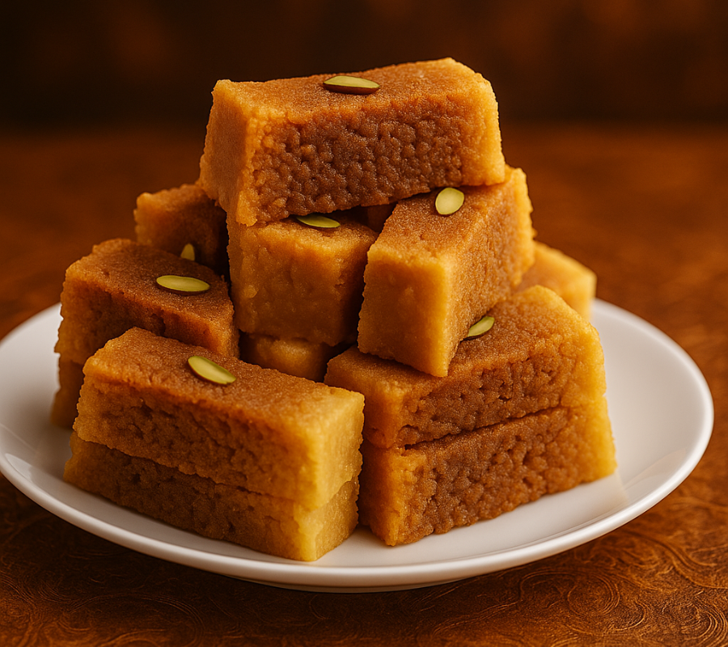

Milk Cake
Ingredients
- Sugar
- full‑fat milk
- ghee (clarified butter)
- cardamom powder
- lemon juice or vinegar (to curdle milk)
- chopped pistachios/almonds (for garnish)
Recipe
-
Boil Milk
Pour milk into a heavy pan and bring to a boil, stirring occasionally.
-
Curdle milk
Add lemon juice or vinegar gradually until milk curdles and separates into paneer and whey.
-
Cook paneer
Drain whey, return paneer to pan, and cook on low heat until it thickens.
-
Add sugar & ghee
Mix in sugar and ghee, stirring continuously until mixture thickens and leaves sides of pan.
-
Flavoring
Add cardamom powder and mix well.
-
Set the cake
Transfer mixture to a greased tray, spread evenly, and let it cool.
-
Garnish & cut
Sprinkle chopped nuts, press lightly, allow to set, then cut into squares or rectangles.

Gulab Jamun
Ingredients
- 1 cup khoya (mawa) – grated
- 3 tbsp maida (all‑purpose flour)
- ¼ tsp baking soda
- 2 tbsp milk (for kneading)
- Ghee or oil (for deep frying)
- 2 cups sugar
- 2 cups water
- 4–5 green cardamoms
- Few drops of rose water or saffron strands (optional)
Recipe
-
Prepare sugar syrup
- Boil sugar and water together.
- Add cardamom and rose water/saffron.
- Simmer for 5–7 minutes until slightly sticky. Keep warm.
-
Make dough
- Mix grated khoya, maida, and baking soda.
- Add milk gradually and knead into a soft, smooth dough.
- Rest for 10–15 minutes.
-
Shape balls
- Divide dough into small portions.
- Roll gently into smooth balls (no cracks).
-
Fry gulab jamuns
- Heat ghee/oil on low‑medium flame.
- Fry balls slowly until golden brown, turning gently for even color.
-
Soak in syrup
- Remove fried jamuns and immediately place them in warm sugar syrup.
- Let them soak for at least 2 hours for best flavor.
-
Serve
- Enjoy warm or chilled, garnished with nuts if desired.